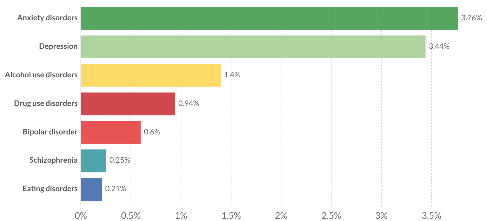

What are the common types of mental disorders?
- Depression
- Anxiety disorders
- Obsessive-compulsive disorder (OCD)
- Bipolar disorder
- Post-traumatic stress disorder (PTSD)
- Schizophrenia
Estimate share of the total population with a given mental health or substance use disorder, 2017

image source: https://ourworldindata.org/mental-health
DEPRESSION
A mental health disorder characterized by persistently depressed mood or loss of interest in daily activities, causing significant impairment in daily life. Most common causes include a mixture of biological, psychological and social sources of distress.
It can lead to a range of behavioral and physical symptoms. These may include changes in sleep, appetite, energy level, concentration, daily behavior or self-esteem. Symptoms are usually severe enough to cause noticeable problems in relationships with others or in day-to-day activities, such as work, school or social activities.
Treatment is usually medication, talk therapy or a combination of the two. Increasingly, research suggests that these treatments may normalize brain changes associated with depression.
Depression ranges from mild episodes of sadness to severe, persistent depression. Clinical depression (or major depression) is the more-severe form of depression. It is more than the sadness caused by a loss, such as the death of a known person or maybe a medical condition.
ANXIETY DISORDER
A mental health disorder characterized by feelings of worry, anxiety or fear that are strong enough to interfere with one's daily activities. Examples include panic attacks, social phobia and some more.
There are several types of anxiety disorders:
- Generalized anxiety disorder - The person feels excessive, unrealistic worry and tension with little or no reason.
- Panic disorder – Feeling of sudden, intense fear that brings on a panic attack. During a panic attack the person can break out in a sweat, have chest pain, and also have palpitations. It would feel like choking or having a heart attack.
- Social anxiety disorder - Also called social phobia, this is the feeling of overwhelming worry and self- consciousness about everyday social situations and other people's judgement.
- Agoraphobia – It is the intense fear of being in a place where it seems hard to escape or get help if an emergency occurs. For example, Panic or anxiety occurring when on an airplane, public transportation, or standing in line with a crowd.
- Separation anxiety - Anyone can get this disorder. It is the feeling of major anxiety of fear when a close person leaves the sight. It causes feeling of worry that something bad may happen to the loved one.
- Selective mutism - This is a type of social anxiety in which young kids who talk normally with their family don’t speak in public, like at school.
OBSESSIVE COMPULSIVE DISORDER (OCD)
This brings out unreasonable thoughts and fears (obsessions) that lead to repetitive and compulsive behaviors. OCD often centers on themes such as a fear of germs or the need to arrange objects in a specific manner. Symptoms usually begin gradually at a mild stage and vary throughout life.
Treatment
Patients with OCD who receive appropriate treatment commonly experience an increased improved quality of life and improved functioning. It includes talk therapy, medication or both. Treatment may improve an individual's ability to function at school and work, develop and enjoy relationships, and pursue leisure activities.
Self-care - Maintaining a healthy and clean lifestyle can help in coping with OCD. The basic relaxation techniques, such as meditation, yoga, visualization and massage can help ease the stress and anxiety caused by OCD.
Caregiver interventions - It is recommended for the person’s family or caregivers to show support and help with exposure practice at home.
Medication - Selective serotonin reuptake inhibitors (SSRIs), typically used to treat depression, can also be effective in the treatment of OCD. The SSRI dosage to treat OCD is usually higher than that used to treat depression. Patients sometimes respond to different SSRI medications. Other psychiatric medications can also be effective. It usually takes six to twelve weeks for noticeable changes.
BIPOLAR DISORDER
A disorder associated with episodes of mood swings ranging from depressive lows to manic highs. In a depressed state, one may feel sad, hopeless and lose pleasure in most activities. When the mood shifts to mania or hypomania (less extreme than mania), one may feel excited, full of energy or unusually irritable. These mood swings can affect sleep, energy, activity, behavior and the ability to think clearly. It is also called manic depression.
Episodes of mood swings may occur rarely or multiple times a year and may also be associated with suicidal thoughts. Even though this disorder is a lifelong condition, one can manage the mood swings and other symptoms by following a treatment plan. In most cases, bipolar disorder is treated with medications and psychological counseling (psychotherapy).
Causes
The exact cause of bipolar disorder is unknown, but several factors like genetics, environment, chemistry and altered brain structure may be involved.
Biological differences - People with bipolar disorder appear to have physical changes in their brains. The significance of these changes is still uncertain but may eventually help pinpoint causes.
Genetics - Bipolar disorder is more common in people who have a first-degree relative, such as a sibling or parent, with the condition. Researchers are trying to find genes that may be involved in causing bipolar disorder.
POST-TRAUMATIC STRESS DISORDER (PTSD)
Post-traumatic stress disorder (PTSD) is a mental health disorder that begins after a traumatic event. That event may involve a real or perceived threat of injury or death. The condition may last months or years, with triggers that can bring back memories of the trauma accompanied by intense emotional and physical reactions. The trauma could be anything like an accident, natural disaster - earthquake/tornado, military combat, physical/sexual assault or abuse.
The symptoms may include nightmares or flashbacks, avoidance of situations that bring back the trauma or depressed mood.
Treatment
Treatment includes different types of psychotherapy as well as medications to manage symptoms.
Cognitive behavioral therapy (CBT) or “talk therapy” encourages to process the traumatic event and change the negative thinking patterns linked to it.
Exposure therapy involves re-experience elements of the trauma in a safe environment. This can help desensitize to the event and reduce the symptoms.
SCHIZOPHRENIA
A disorder that affects a person's ability to think, feel and behave clearly. It is characterized by thoughts or experiences that seem out of touch with reality, disorganized speech or behavior and decreased participation in daily activities. Difficulty with concentration and memory may also be present. The exact cause of schizophrenia isn't completely known yet.
In some cases, a person will start to show unusual behaviors from childhood, but these only become significant as they get older. In others, the symptoms may appear suddenly. Schizophrenia is a lifelong condition, but a combination of medications and psychotherapy can help manage the symptoms.
It is a fairly rare condition. It usually appears in late adolescence or early adulthood and can have a profound impact on a person’s life, as well as the lives of those around them.
Causes
Genetic inheritance can be a major factor. Without any history of schizophrenia in a family, the chances of developing it are below than 1%. The risk rises if one of the parents has a diagnosis of it.
A chemical imbalance of a neurotransmitter called dopamine or possibly also serotonin can cause to develop Schizophrenia.
There are certain environmental factors that may increase the risk of schizophrenia such as trauma during birth, malnutrition before birth, viral infections or maybe drugs and medication.
A few more types of mental disorders: